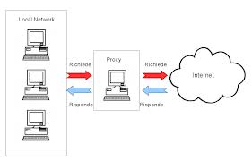

Un proxy è un programma che si interpone tra un client ed un server, inoltrando le richieste e le risposte dall'uno all'altro. Il client si collega al proxy invece che al server, e gli invia delle richieste. Il proxy a sua volta si collega al server e inoltra la richiesta del client, riceve la risposta e la inoltra al client.
A differenza di bridge e router, che lavorano ad un livello ISO/OSI più basso, i proxy nella maggior parte dei casi lavorano a livello applicativo; di conseguenza un programma proxy gestisce un numero limitato di protocolli applicativi.
HOME